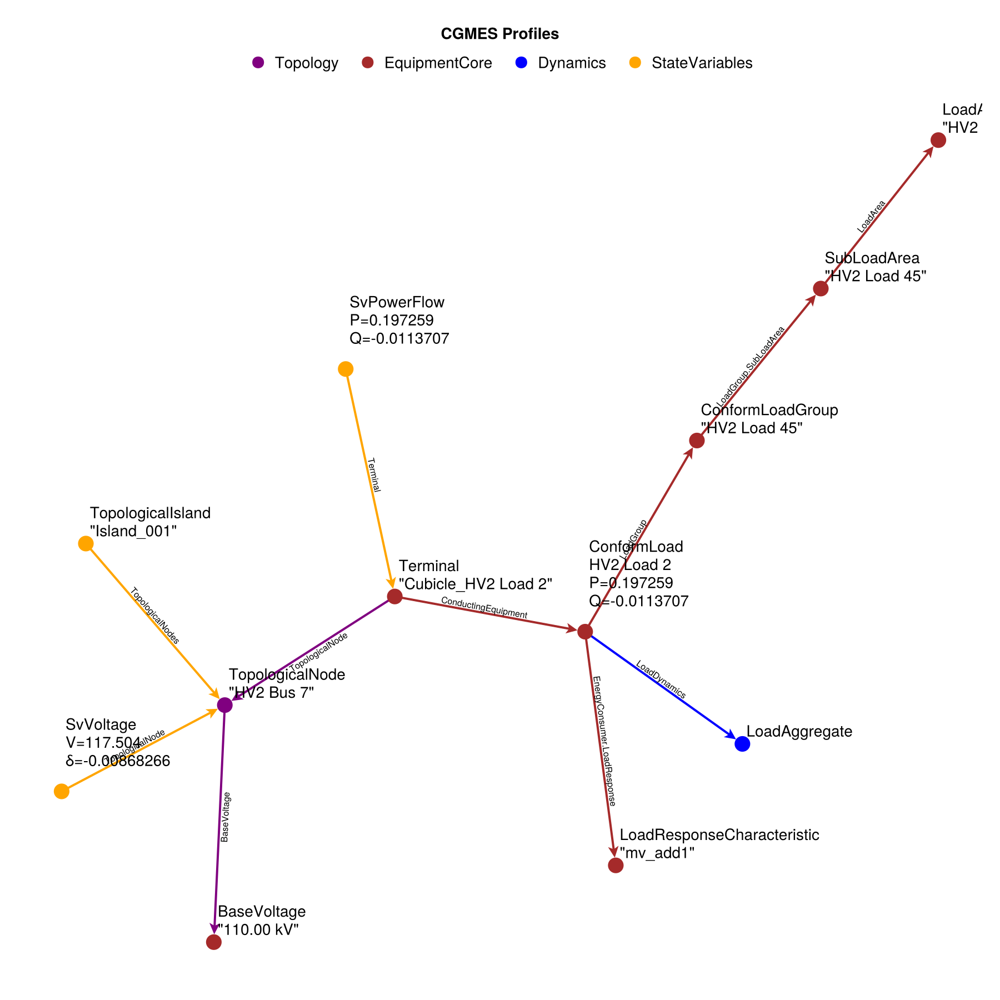
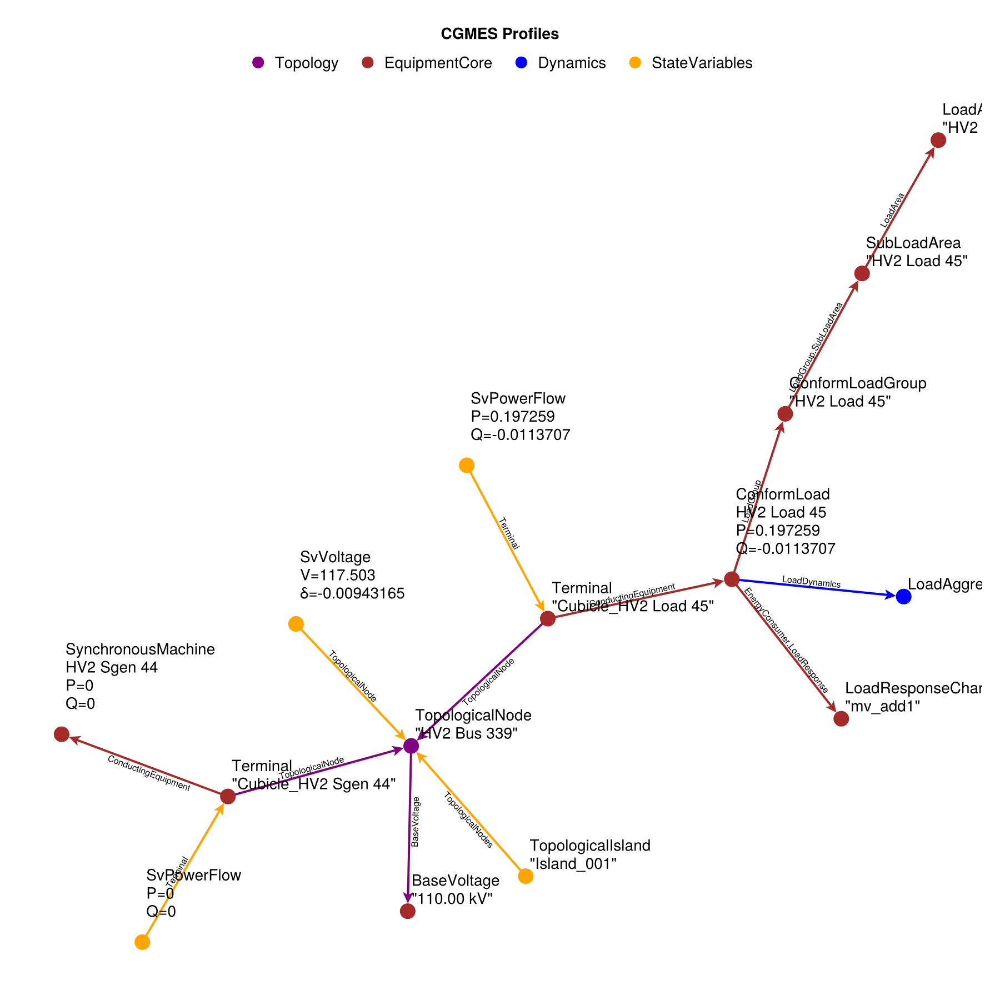
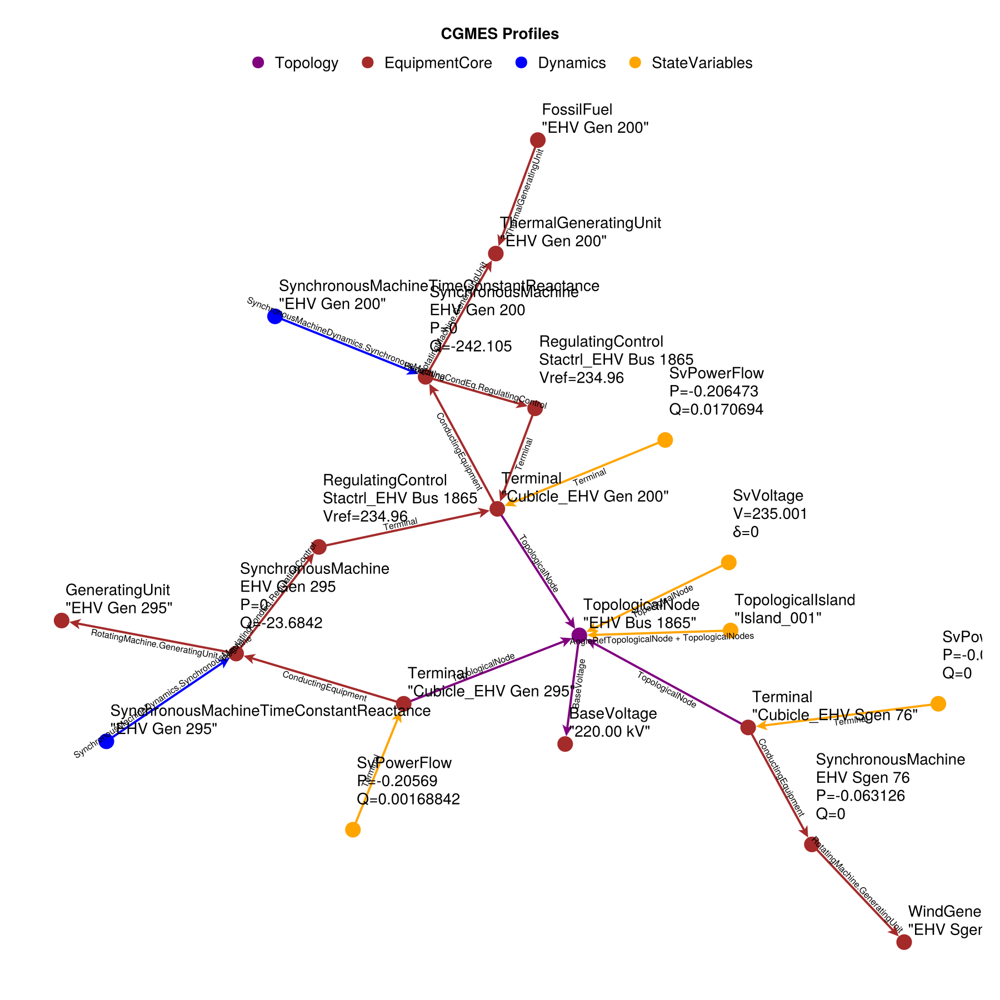
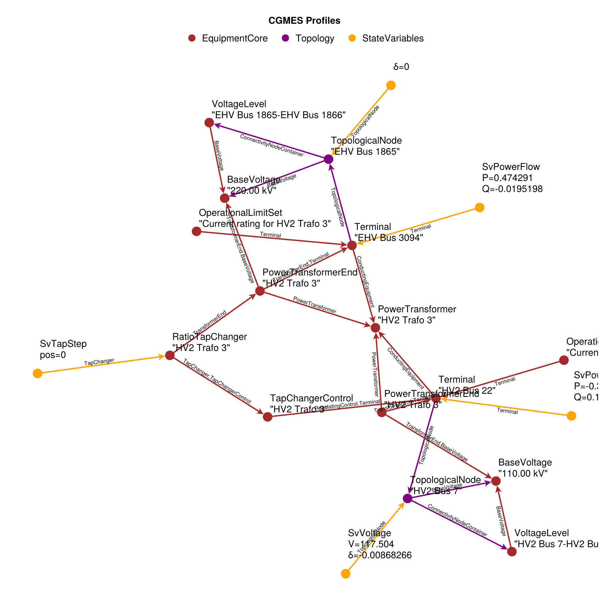
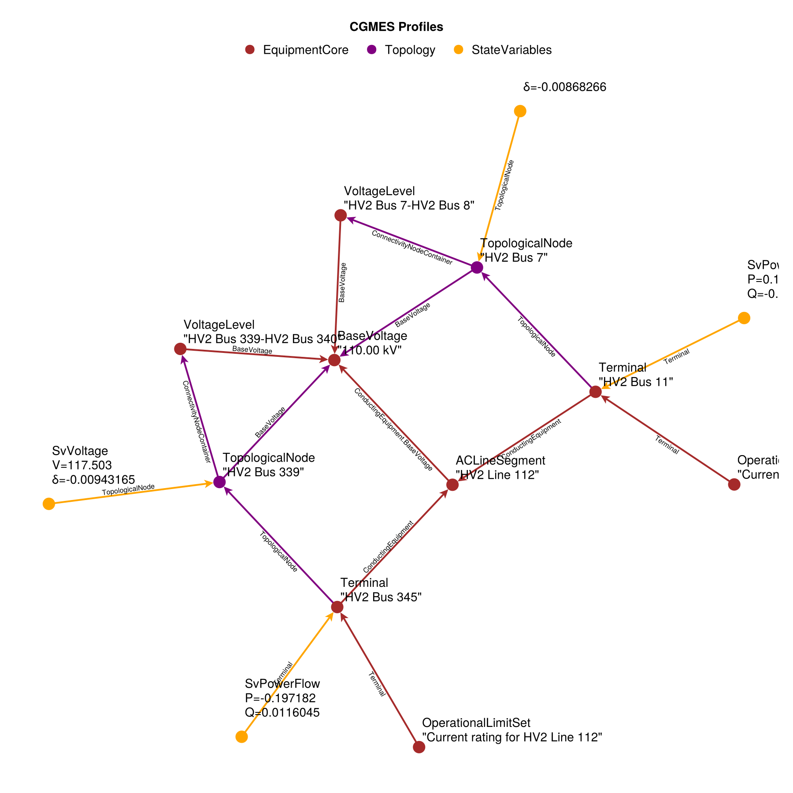

Inspection of Test 1-EHVHV-mixed-all-2-sw-Ausschnitt
using PowerDynamics
using PowerDynamicsParsers
using PowerDynamicsParsers.CGMES
using CairoMakie
DATA = joinpath(pkgdir(PowerDynamicsParsers), "test", "CGMES", "data", "1-EHVHV-mixed-all-2-sw-Ausschnitt")
dataset = CIMCollection(CIMDataset(DATA))reduced_dataset = reduce_complexity(dataset)
inspect_collection(reduced_dataset; edge_labels=false, node_labels=:short, size=(1000,1000))Well, that's still a bit too much. Let's split the dataset topologically
nodes, edges = split_topologically(dataset; warn=false)Bus 3: Load
inspect_collection(nodes[3]; size=(900,900))
Discussion: Power of load and powerflow result match perfectly. I guess this is just a PQ node for the powerflow.
Bus 2: Load + Machine
inspect_collection(nodes[2]; size=(900,900))
Discussion:
- Synchronous machine has power P=Q=0, no voltage controller
- The bus power matches the load power, so I guess once again this is a PQ node?
Bus 1: Three Machines
inspect_collection(nodes[1]; size=(900,900))
Discussion:
- Why is the regulating control connected to a different terminal equipment than the machine?
- The powerflow result on both machine terminals is not even close to the machine setpoint (nor power factor)
- The voltage of the topological node does not match the reference value for the voltage regulator
- On the third machine, the PQ setpoints are consistent with the powerflow result
- The overall bus power (as seen by state value of connected transformer) is P=-0.47 and Q=0.019, so the SvPowerflow values seem consistent
Powerline 1: Transformer
inspect_collection(edges[1]; size=(900,900))
Discussion:
- Both transformer ends have b/g and r/x, so this can be interpreted as a pi-line with two bases and r1+r2 / x1+x2 impedance.
- The RatioTapChanger points at one transformer end but regulates the voltage at the other transformer end. Does it mean it acts on one end to control voltage on the other end?
Powerline 2: AC Pi-Line
inspect_collection(edges[2]; size=(900,900))
Discussion: Seems fine.
This page was generated using Literate.jl.